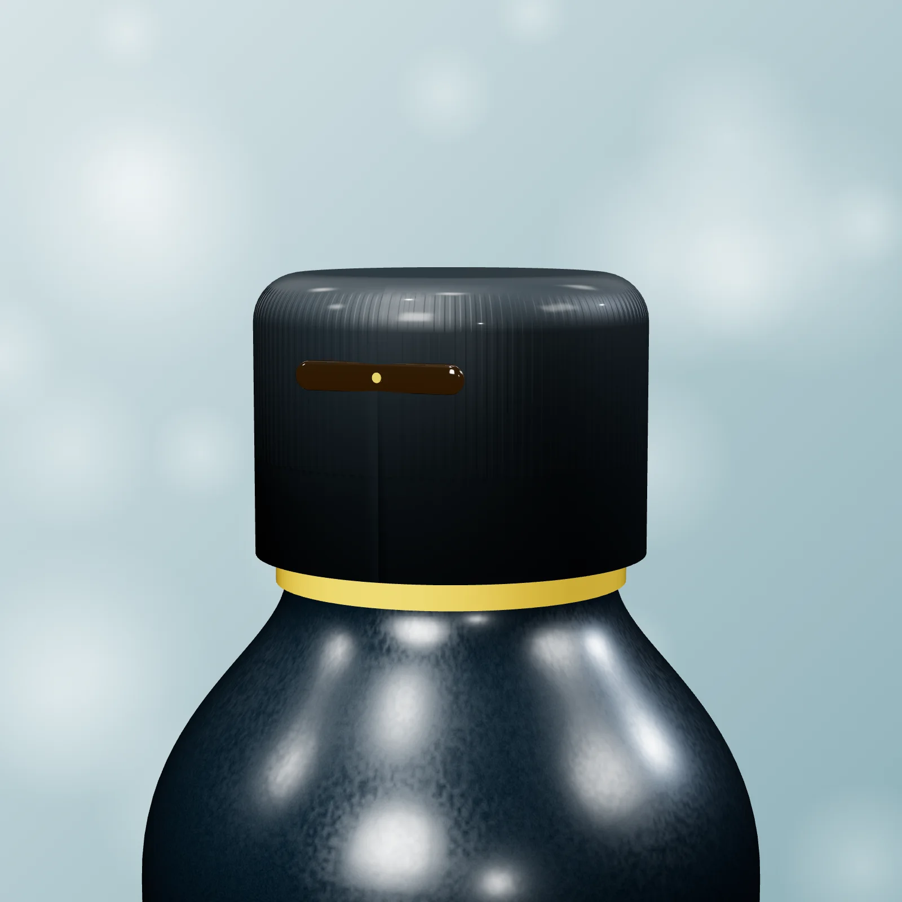
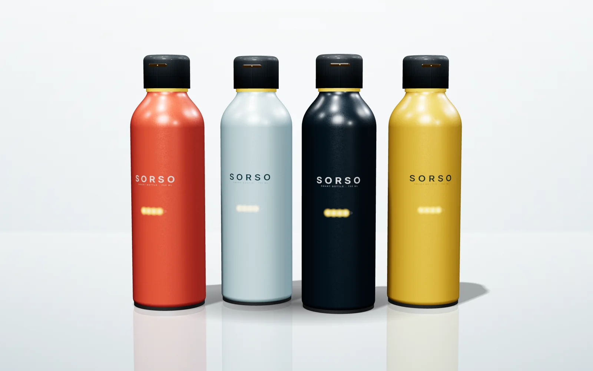

Bevi di più, senza pensarci.
Sorso si illumina quando è ora di bere e conta i litri della tua giornata. Acciaio riciclato, acqua fredda per 24 ore, meno plastica.
- Spedizione gratuita
- Reso in 30 giorni
- Garanzia 2 anni
Spedizione gratuitaDa Ghisalba in 3 giorni lavorativi
Fredda 24 oreDoppia parete in acciaio inox
30 giorni di batteriaRicarica USB-C o a induzione
Acciaio riciclatoImballi in cartone riciclato
Una borraccia per ogni giornata
Dalla Mini per lo zaino al pack da regalare: scegli il formato e il colore che preferisci.

Un tappo intelligente, un gesto semplice
- Si illumina. Una luce gialla si accende ogni ora per ricordarti di bere. Si spegne appena fai un sorso.
- Conta i litri. Un sensore nel tappo misura ogni sorso e tiene il conto della giornata, anche senza smartphone.
- Acqua fresca. La doppia parete in acciaio la tiene fredda per 24 ore, calda per 12.
- Dura un mese. Una ricarica USB-C e la batteria arriva a 30 giorni.
Pensata per durare
Quattro colori, una sola idea
Corallo, Ghiaccio, Notte e Sole: tonalità scelte per stare bene sulla scrivania, in palestra o nello zaino. Il rivestimento è una verniciatura a polvere opaca, resistente ai graffi e piacevole al tatto.
- Verniciatura a polvere antigraffio
- Fondo in gomma antiscivolo
- Lavabile in lavastoviglie (il tappo a mano)

Meno plastica, davvero
Acciaio riciclato
Il corpo è in acciaio inox riciclato, senza BPA: una Sorso sostituisce centinaia di bottigliette di plastica.
Imballi riciclati
Scatole, riempitivi e nastro sono in carta e cartone riciclati e riciclabili.
Riparabile
Tappo, guarnizioni e batteria si sostituiscono: la borraccia non va buttata se si rompe un pezzo.
Nata a Ghisalba, spedita in tutta Italia
Fonte Viva nasce a Ghisalba con un'idea semplice: aiutare le persone a bere più acqua e a usare meno plastica. Curiamo ogni dettaglio di Sorso e spediamo dal nostro magazzino in 3 giorni lavorativi.
Cosa dicono di Sorso
"Non dimentico più di bere durante le lezioni."
GiuliaStudentessa"Fredda dopo una giornata intera in magazzino."
MarcoMagazziniere"La luce gialla è utilissima in ufficio."
SaraImpiegataHai un dubbio?
Come si ricarica?
Con il cavo USB-C incluso nella confezione, oppure appoggiandola alla base di ricarica a induzione (venduta a parte).
Posso lavarla in lavastoviglie?
Il corpo sì. Il tappo con il sensore va lavato a mano con acqua tiepida.
Serve uno smartphone?
No: la luce e il conteggio funzionano anche da soli. Lo smartphone serve solo se vuoi vedere le statistiche.
Quanto costa la spedizione?
La spedizione standard è sempre gratuita. L'express in 24 ore costa 6,90 €, ed è gratis da 60 € di spesa.